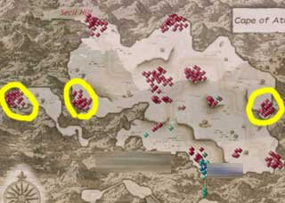
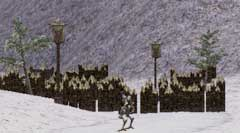
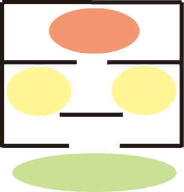
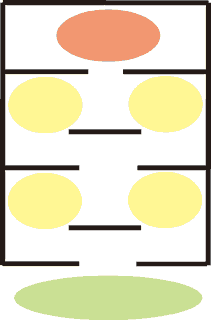

別会社のゲームですが、「三國無双」や「戦国無双」の拠点と同じだと考えてください。ここをつぶさない限り、小隊が無限にわいてくるので、インベイジョン攻略には非常に重要な箇所です。
拠点には柵が設けられ、複数の敵が常に固まって待機しております。また、拠点には中ボスがおりこのボスを含めすべての敵を倒さない限り、拠点をつぶしたことにはなりません。

(拠点)

(拠点)
拠点の形状と敵の配置は下の画像のようになっています。丸の部分が敵のいる位置で、色が赤に近づくほど強い敵が待機しています。また、一部の拠点については内部の防衛ラインが二重になっているところがあるそうです。

(通常の拠点)

(防衛ラインが二十の拠点) |